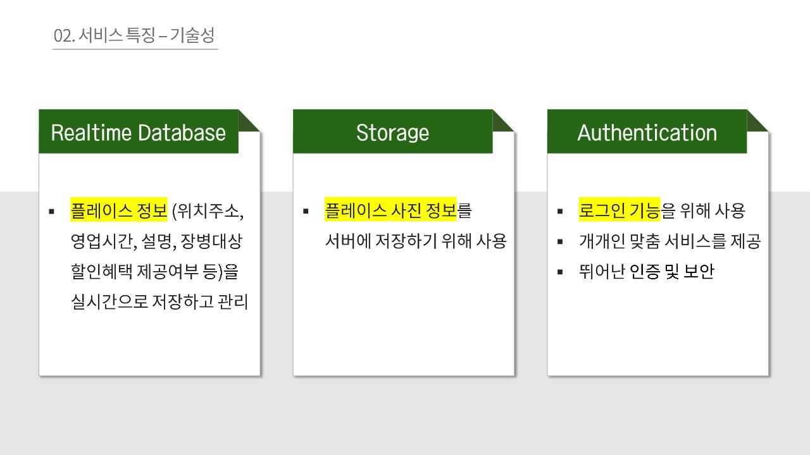
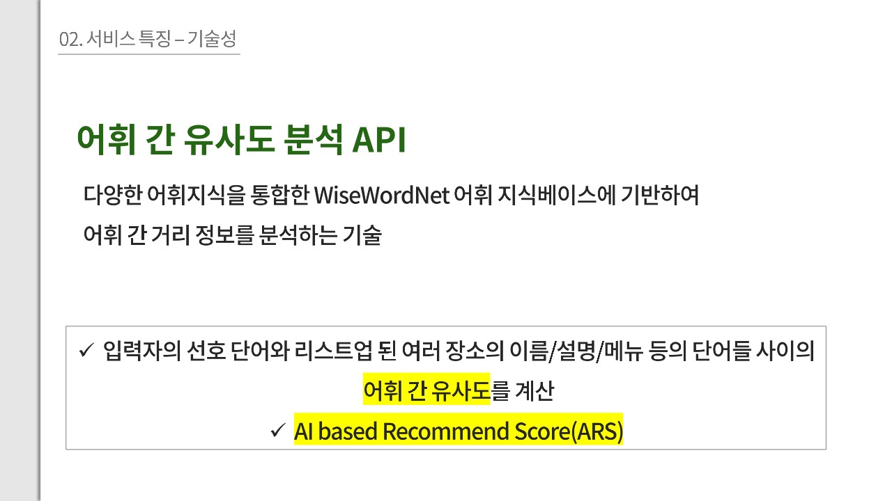
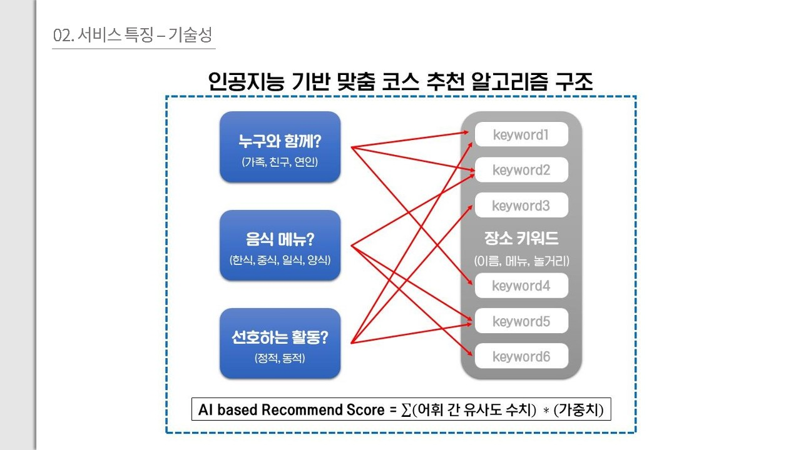
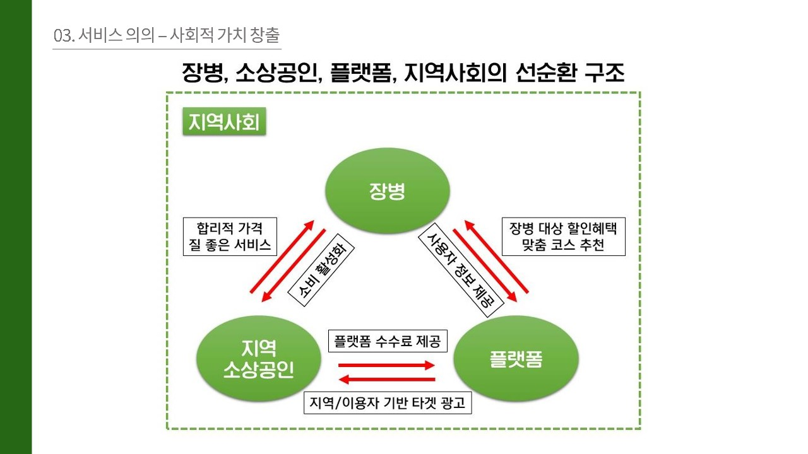
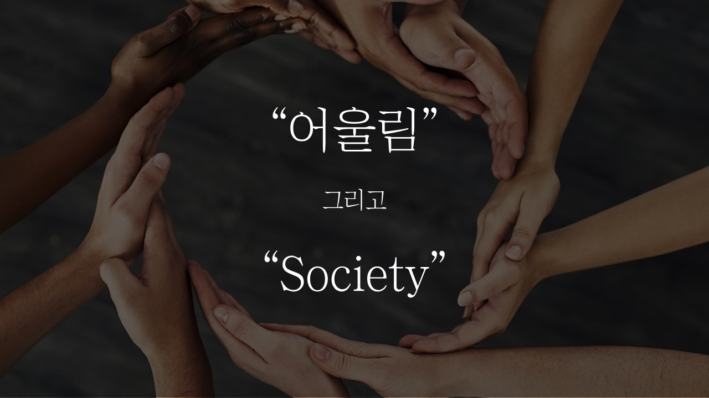
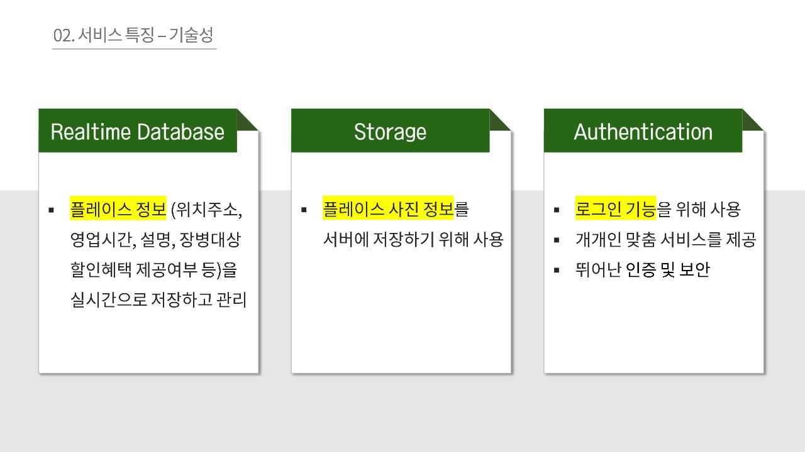
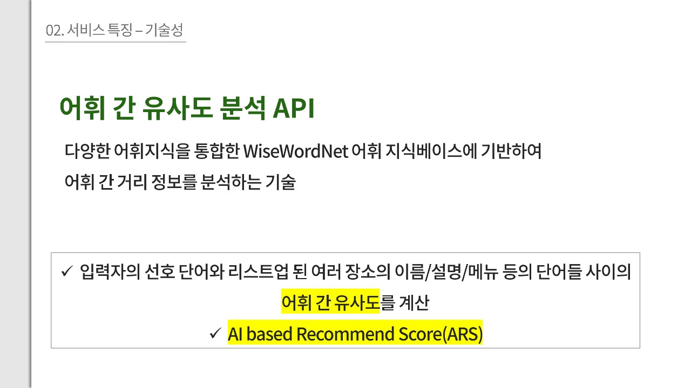
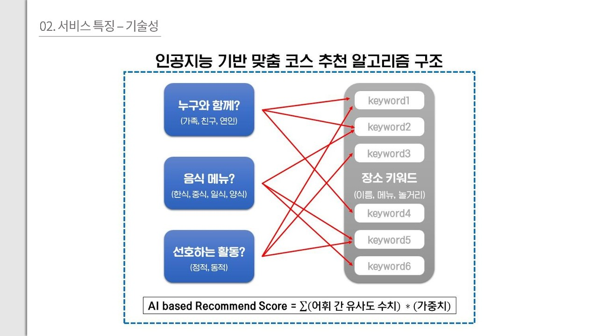
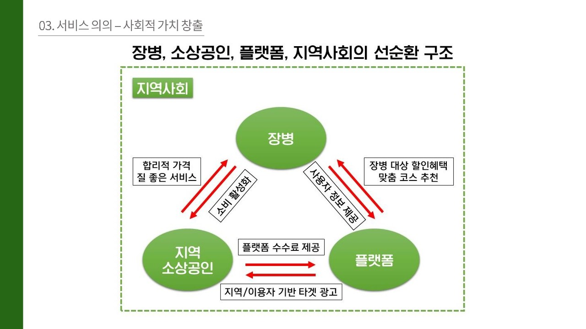
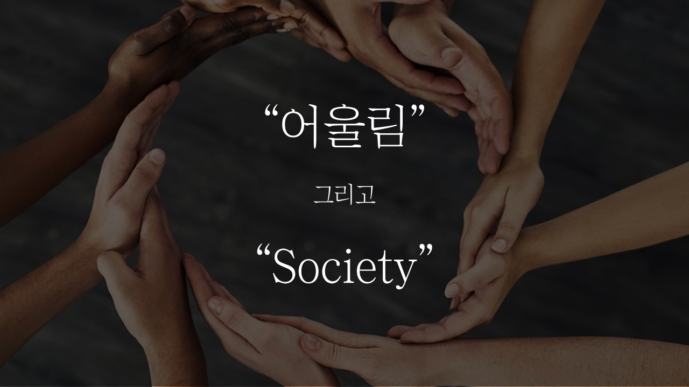

청각장애를 지닌 분들은 대학교에서 수업을 듣고 학습하는 데에 어려움을 겪고 있어 일반적인 학습 환경에서 다양한 형태의 불평등을 마주하고 있습니다.
이로 인해 성균관대학교를 비롯한 많은 우리나라 대학에서는 장애학생의 실질적 학습권을 보장할 수 있도록 장애대학생의 교육활동에 필요한 각종 편의를 제공할 수 있도록 인력 위주로 확대하고 있는 추세입니다. 대표적인 예시로, 서울대학교에서는 청각장애학생의 학습을 지원할 전문교육지원인력(속기사)을 고용하여 교내 청각장애학생 수강 교과 문자통역을 지원하고 있습니다.
이러한 흐름 속에서 저희 팀은 청각장애인 분들의 학습권을 보장하기 위한 취지로 청각장애인이 대학에서 수업을 듣고 학습을 하는 데에 필요한 각종 편의 기능들을 제공하는 앱을 개발하였습니다.
저희 프로젝트는 “고품질 교육”, “불평등 감소”를 비롯한 UN의 17가지 지속가능한 개발 목표를 주제로 개최되는 Google Solution Challenge에 제출되었으며, 이후 Google사와의 직접적인 협력을 통해 보다 발전해 나가는 것을 목표로 하고 있습니다.
더보기
문제 정의 및 기능
다양한 자료를 조사한 결과 저희는 청각장애인 분들이 학습 과정에서 겪을 수 있는 문제를 3가지로 정의하였습니다. 각 문제에 대한 저희가 생각한 앱의 핵심 기능은 다음과 같습니다.
1. 교수님의 말씀을 잘 듣지 못한다.
청각장애인 분들은 장애의 정도에 따라 수업 도중에 교수님의 말씀을 대부분 혹은 일부분을 듣지 못하는 상황에 놓여있습니다. 이에 따라 저희는 교수님의 말씀을 녹음하고, 이를 실시간으로 텍스트로 변환해 주는 기능을 핵심 기능 중 하나로서 제공하고자 합니다. 또한 일반적으로 남성의 목소리보다 여성의 목소리가 더 뚜렷하게 잘 들리기 때문에, 소리를 증폭시켜 주는 보청기 기능과 함께 소리의 높낮이를 조정할 수 있는 기능 또한 추가할 것입니다.
2. 교수님을 대상으로 질문 및 소통하는 것이 쉽지 않다.
청각장애인 분들은 자신의 목소리조차 들리지 않는 경우가 있기 때문에, 자신이 잘 말하고 있는지와 적당한 크기로 말하고 있는지 알지 못할 수 있습니다. 따라서 이로 인해 수업 도중 교수님께 손을 들고 질문하는 것이 청각장애인에게는 도전적인 일이 될 수 있을 것이라고 생각했습니다. 따라서, 저희는 앞서 말씀드린 녹음 및 글자 변환 기능에 “질문 버튼”을 추가하여 자신이 말하고 있는 문장을 텍스트로 표시하고, 데시벨 측정 기능을 통해 적당한 목소리 크기로 말할 수 있도록 지원하는 기능을 부가적으로 추가하고자 합니다.
3. 앞선 이유로 인해 추후 학습에도 어려움이 있다.
저희는 청각장애인 분들이 수업 중에 겪는 어려움으로 인해 추후 개인적으로 진행하는 학습에도 어려움이 있을 수 있겠다고 생각했습니다. 예를 들어 교수님이 수업 동한 하신 말씀을 온전히 이해하지 못한다면 복습 과정에서도 중요 내용을 숙지하는 것이 쉽지 않을 것입니다. 저희가 개발하는 앱의 취지가 “대학생을 위한 학습 도우미”라는 점에 입각하여, 우선 녹음한 파일과 변환된 글자를 과목별, 주차별로 정리하여 기록을 편리하게 찾아볼 수 있도록 앱을 디자인할 생각입니다.
또한 저희는 인공지능을 활용하여 청각장애인 분들이 추후 자습을 하는데 도움이 될 수 있도록 네 가지 기능을 제공할 생각입니다. 첫 번째는 각 강의마다 녹음한 내용을 분석하여 요약 정리해 주는 기능입니다. 두 번째는 녹음 과정에서 중요한 키워드를 인식하여 하이라이트 표시를 해주는 기능입니다. 예를 들어, “컴퓨터의 주요 구성 요소에는 CPU와 메모리가 있다.”와 같은 식입니다. 세 번째는 과제 인식 기능입니다. 예로 들어, 교수님이 “3월 14일까지 레포트를 제출하세요.”라고 말씀하실 때 이러한 과제 공지와 관련한 문장을 인식하고 상기시켜준다면 청각장애인 분들이 공지를 듣지 못해 과제를 제출하지 못하는 억울한 상황이 일어나는 것을 방지할 수 있을 것입니다. 마지막으로, 퀴즈 생성 기능을 생각하였습니다. 이는 녹음한 문장의 일부를 가려 단답형 퀴즈의 형식으로 제공하는 기능입니다. 이 기능의 구현은 앞서 말씀드린 하이라이트 기능과 기술적으로 유사할 것으로 예상됩니다. 가령, “컴퓨터의 주요 구성 요소에는 CPU와 ___가 있다.”와 같은 형식입니다.
기능요약:
- 강의 녹음 및 실시간 텍스트 변환
- 소리 증폭 및 높낮이 조정
- 질문 버튼
- 과목별, 주차별 노트 정리
- 인공지능 기반 기능
1. 강의 요약
2. 중요 부분 하이라이트
3. 과제 인식
4. 퀴즈 생성
1. Project Setup – Please clearly describe the challenge you are solving for using a problem statement.
Deaf students often encounter significant challenges in traditional learning environments, as they may struggle with attending lectures, engaging in real-time communication with tutors, and reviewing study materials effectively. These difficulties can result in unequal learning opportunities and hinder their academic progress. Our solution aims to address these challenges by developing an app that offers essential features and conveniences tailored to the needs of deaf students, enabling them to participate more fully in classes and improve their learning experiences at universities.
2. Project Setup – What United Nations' Sustainable Development goal(s) AND target(s) did you choose for your solution? What inspired you to select these specific goal(s) AND target(s)?
Our project focuses on addressing two United Nations' Sustainable Development goals: Goal 4 (Quality Education) and Goal 10 (Reduced Inequalities). We selected these goals because we were inspired to tackle the challenges faced by deaf individuals in accessing quality education and fully participating in society. We aimed to address Goal 4's objective of ensuring inclusive and equitable education for all and Goal 10's aim of reducing inequalities and empowering disadvantaged groups. Our motivation stems from the belief that deaf people have the right to learn and communicate without barriers and discrimination. Our solution is designed to provide a range of convenience features that enable deaf students to attend classes and learn at universities more effectively and comfortably. By addressing these specific goals and targets, we hope to create a more inclusive educational environment and promote equal opportunities for deaf individuals.
3. Implementation – Describe the architecture that your team chose for your solution. What are the high-level components of your architecture? What is the responsibility of each component? (Technical components - Backend, Frontend, Technologies, Programming languages, and Tools used)
Our team chose a hybrid architecture for our solution. We used Flutter, programmed with the Dart language, to build a smartphone application as the front end. This front end is responsible for providing the user interface, allowing deaf students to interact with the app and access its features. For the back end, we used Google Firebase to implement necessary server-side processing, including authentication, stable database connections, and file storage. This component ensures the app's smooth functionality and secure management of user data. We integrated Google Cloud's Speech-to-Text API to convert the professor's lecture to text in real-time, making it accessible to deaf students. Our solution's AI segment comprises several high-level components, including keyword highlighting and summarization features. The keyword highlighting feature identifies essential points in the lecture extracted from the recording, helping students focus on critical information. The summarization feature provides an accurate summary for each chapter of the lecture, enabling deaf students to grasp the main ideas quickly. By combining these components, our solution offers a comprehensive and user-friendly experience for deaf students, ensuring they have access to the resources they need for a successful learning experience.
4. Implementation – Which specific products and platforms did you choose to implement these components and why?
Our team decided to use Google Flutter to create a cross-platform application efficiently from a single codebase. We chose Flutter over similar options, such as React Native and Ionic Framework, because of its rich features, better performance, and easy-to-learn documentation. We also used FlutterFlow, a low-code Flutter app builder, to quickly design the application user interface and prototype. Based on the Flutter codebase generated from FlutterFlow, we started working on the functional features by writing the Dart code. To ensure smooth server-side processing, our team used Google Firebase for the backend. We utilized Firebase Authentication for user authentication, Firestore to store users' data such as lecture lists and internal data, and Cloud Storage for Firebase to store users' uploaded PDF files. We integrated Google Cloud Speech-to-Text to convert the professor's lecture to text in real-time. This implementation maximized the overall performance and accuracy of the speech-to-text conversion. Our team utilized the OpenAI API services to provide lecture summaries and keyword extraction. We used the GPT-3.5-turbo model to ensure high-quality text analysis and summarization. By leveraging these specific products and platforms, we aimed to create a reliable and efficient solution for deaf students to access and understand lecture content.
5. Feedback / Testing / Iteration – Walk us through the steps you took to test your solution with real users (outside of your team). Provide three specific feedback points you received from real users. What did you learn and how did it help improve your solution? What are three specific things you implemented and improved for your solution based on the feedback from users?
To test our solution with real users, we conducted several sessions with three deaf students on our campus.
The first feedback point was the demand for a PDF viewer feature corresponding to each lecture's transcript since most professors rely on a PDF file. We implemented this feature by enabling users to upload PDF files in the application and displaying a PDF viewer with the transcripts grouped on each page.
Secondly, we received feedback concerning the speech-to-text engine's accuracy. Previously, users faced several inaccurate text outputs from Csdcorp’s speech-to-text as it was not for a continuous spoken conversation. Thus, we switched to Google Cloud Speech-to-Text, which improved continuous speech-to-text accuracy and performance -- allowing the application to process lectures better in real time. Through this process, we learned about cloud-based speech-to-text processing and were impressed by Google Cloud speech-to-text's ML techniques and extensive vocabulary & language support.
Finally, the third feedback point was the transcript edit feature. While our improved speech-to-text worked well in most cases, our testers encountered occasional misspellings. We added a feature allowing users to edit the transcripts manually, providing a better user experience in customizing the materials.
Based on user feedback, these three key improvements have significantly enhanced our solution's overall experience and usability for deaf students participating in class activities.
6. Feedback / Testing / Iteration – Highlight one challenge you faced while building your code, including detail on how you addressed the issue and the technical decisions and implementations you had to make.
One challenge we faced was the task of extracting significant keywords. We found that too many words were being extracted, which could overwhelm the user and not be an effective way to highlight important points. We modified the prompt to extract a narrower range of words to address this issue, but this did not fully resolve the problem. We then decided only to emphasize keywords that appeared for the first time in the lecture and set a limit on the number of keywords based on the length of the script. This prompt engineering helped to highlight the most critical points while still keeping the number of keywords manageable for the user. Our technical decisions and implementations involved using OpenAI's GPT-3.5-turbo API to extract the keywords and then implementing the limit and emphasis rules within the code.
주요 키워드를 추출하는 작업에서 너무 많은 단어가 추출되는 문제점이 있었다. 프롬프트를 수정하여, 좁은 범위의 단어를 추출하도록 했으나 해결되지 않았다. 따라서 최초로 등장하는 키워드만 강조하고 스크립트의 길이에 따라 키워드 개수 제한을 만들었다.
7. Success and Completion of Solution – Please describe your project's impact using cause and effect. How does your solution address the problem you are looking to solve? How were some of the goals of your solution evidenced? What was the quantifiable data collected? What tools did you use to help understand your solution's impact?
Our project addresses the challenges faced by deaf students in class by providing a system that helps them comprehend course content. Our solution includes four features to tackle specific issues:
- Speech-to-text converts the professor's spoken words into text, assisting deaf students who rely on reading to understand the lecture.
- Highlighting identifies and highlights essential information, enabling deaf students to focus on crucial points.
- Summarization generates summaries to help deaf students grasp the overall material.
- The system saves lectures for each class slide.
These features aim to improve deaf students' engagement and comprehension during classes. The speech-to-text function is precious for students who cannot rely on traditional hearing aids or interpreters. To assess the solution's effectiveness, we gathered feedback from three deaf students at our school. They previously relied on stenographers to attend classes, but our service offers additional features beyond the speech-to-text capabilities provided by stenographers. We collected qualitative feedback from the users and compared their experiences to previous methods, such as hiring stenographers. Through this, we gained insights into the effectiveness of our solution in addressing the needs of deaf students and enhancing their learning experience.
8. Scalability / Next Steps – What do you see as the future / next steps for your project? How would you expand your solution to reach a larger audience?
For our project to reach a broader audience beyond deaf individuals, the first approach is to enhance the academic experience for all students. We aim to make our solution more versatile and accessible by addressing the needs of students looking to optimize their learning environments and stay organized. We plan to integrate quiz generation, exam schedule automation, and assignment tracking features with Google Calendar to help students manage their academic responsibilities. Users will receive automatic updates on upcoming deadlines, exams, and quizzes. During our interviews with deaf individuals, we discovered that reading the lengthy text was challenging. To address this issue, we will introduce a feature that allows users to integrate lecture text obtained using a speech-to-text API with their class materials. The app will organize the text across individual pages in formats such as PDF or PowerPoint, promoting efficient learning by enhancing readability and allowing users to review class materials and notes simultaneously. By focusing on these next steps, our solution will become more versatile and accessible, catering to the needs of various students seeking to optimize their academic experience and maintain better organization throughout their studies.
9. Scalability / Next Steps – Explain how the technical architecture of your solution could support (in its current state or with minor changes) scaling to a larger audience.
Our technical architecture is designed to support scaling to a larger audience with its current implementation or through minor adjustments.
Flexible Backend: Google Firebase, which we use for our backend, offers automated traffic management, enabling a flexible response to traffic surges. Firebase can efficiently manage the increased demand as the user base grows without compromising the app's performance.
Adaptive API Request Handling: We have implemented an algorithm that can handle large volumes of OpenAI API request traffic flexibly. This algorithm ensures that our application remains responsive and efficient even when user requests significantly increase.
Efficient API Usage: Our solution initially minimizes API requests by sending them only once in the keyword extraction and summarization functions. After the first request, the result is stored in the Firestore database, so subsequent retrievals do not require additional API calls. This approach significantly improves the efficiency of our solution, especially as more users access these features.
Considering these points, our solution's technical architecture is well-suited to accommodate a growing audience while maintaining its performance and user experience. By leveraging the scalability and flexibility of Google Firebase and optimizing our API usage, we can ensure that our application continues to provide quality support for deaf students in their educational pursuits as our user base expands.
Demo Video Guidelines / Demo Content Tips
Please make sure your video is no longer than 2 minutes in duration (judges will only review the first 2 minutes of a demo video if it is longer)
Start with a short Introduction (15-30 seconds): Solution name, where your team members are from, a concise problem statement, stating which Sustainable Develop Goals you’re solving for in this project, and a high-level overview of your solution
Then begin demonstrating your solution (show us how your solution works); Judges will have your written responses from this submission form to understand the full context of your project, so there is not a need to cover everything in the video itself, since they will have the supporting materials
Demo (90-105 seconds)
Most importantly, judges are looking to see an actual demo of your solution. This should include an actual working prototype (even if it’s not fully completed). You can describe how the application/system behaves and show mock-ups or images, but please make sure the focus of your video features a demonstration of your solution and how users will interact with it. Note that while the quality of the video production is nice to have, you are being graded on solving UN Sustainable Development Goals with a solution that uses Google technologies. Please make sure to include how your solution uses the Google products & platforms you selected for the project and the value it provides users or target groups.
Video Production Tips
Remember the main focus of your demo video is to show a demo of your solution (video production quality is nice to have, but not required)
You can film the demo using your phone camera - the recording doesn't need to be done with a professional camera/setup
Record your demo in landscape mode as this will be posted on YouTube
You can use a voice over in the background describing all the features & functionalities of your solution while you are demoing them; please make sure to minimize the background noise/music to ensure judges can hear the speaker clearly
Posting the video
Please name the video title as "(Your Solution Name) - GDSC Solution Challenge 2023"
Make sure it is hosted on YouTube (feel free to mark the video as unlisted if you’d like to keep it private)
If you mark as unlisted, please make sure to share a link that allows us to view the video during the judging process
INTRODUCTION SCRIPT
Hello there! We are Sungkyunkwan University students from South Korea, submitting our solution named AccousticNote!
We have recognized a problem that most deaf people feel hearing the lecturer's speech and participating in class interactions are challenging.
With our clear challenge recognition, we aimed to accomplish several Sustainable Develop goals -- reduced inequalities and quality education.
Therefore, we devised our idea to create an application with necessary features for deaf people to take classes and learn at university, involving the cutting-edge Google technologies and one of the powerful GPT models.
DEMONSTRATION SCRIPT
[0:30 – 메인 스크린]
Welcome to the video demonstration of our application – AccousticNote.
[0:35 – 수업 추가]
To get started, we will add a new course. After completing these fields, you will see that the item I created appears in the list.
[0:45 – 강의 추가]
I will now create a lecture to start my first note.
[0:50 – Write 페이지, PDF 업로드]
Now the app shows a record button and the file upload button here. The upload button allows users to upload the PDF file relevant to the lecture so that the user can group the lecture transcripts based on the slides. Note that uploading a PDF file is not mandatory.
After uploading the file, the interface will simultaneously show the PDF content and the space for the lecture notes.
Let's take a closer look.
[1:20 – 녹음하는 장면]
Now let's assume that I am participating in the professor's lecture. I will play the professor's speech while the app is recording.
[1:30 – 심리학 입문 강의 (PDF 슬라이드)]
The user can view all the slides in the uploaded PDF file while recording the lecture. The user can group the transcripts on each page by sliding the viewer while the app is recording. This was one of the features that our testers demanded since most professors rely on PDF documents when they provide their lectures.
Also, the user can edit the transcripts in case of misspellings, either while recording or viewing the lecture details. This was another feature that our testers requested as well.
Note that the transcripts in the previous slide are stored.
[View 페이지]
After participating in the classes, you can review the lecture details with our built-in highlighting and summarization feature.
[View 페이지 – Hightlight]
When viewing the transcripts, the application automatically extracts the keywords from the AI model, marking them as yellow.
[View 페이지 – Summary]
If the user opens the summary section, the AI model will generate the concise summary of the lecture, making it easier for users to review and understand important points.
And that's our app. With its core features, deaf students can now take classes and learn at universities more effectively and comfortably. Thank you for watching.

 








